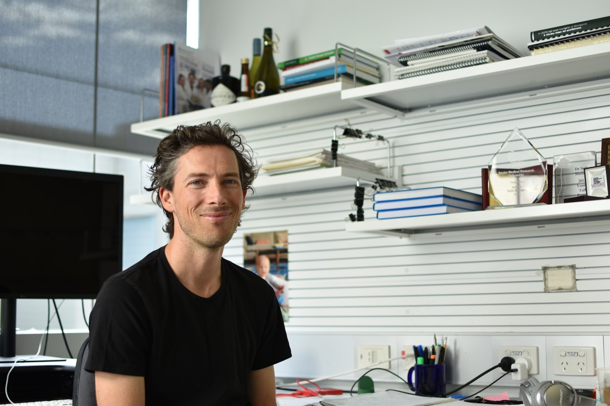

Selected interview · edited for clarity
James Vince & Seth Masters
Walter and Eliza Hall Institute of Medical Research
2019 · 5 minute read

What are your roles at the institute?
James Vince: I’m a lab head at WEHI in the inflammation division. I run a small research group of around four to six people. We work on inflammation and cell death, and how different genetically encoded, programmed cell-death pathways can trigger inflammatory diseases.
Seth Masters: I also run a laboratory at the Walter and Eliza Hall Institute of around the same size. We research autoinflammatory diseases—rare inherited conditions that often cause severe inflammation early in life. Our laboratory uses information from patients to investigate the pathways involved.
What does leading a laboratory look like day to day?
Seth Masters: It’s basically writing lots of emails. James and I both trained as scientists doing experiments, so it’s an odd career in that what you were doing for ten to fifteen years becomes something you don’t do as much anymore. I need to understand what everyone in my lab is doing and be able to discuss how their experiments can work.
These days, it’s more about the bigger-picture direction: where the experiments are headed, the ideas behind them, and how to take them in the right direction. I have conversations about identifying interesting pathways that cause autoinflammatory disease, and how that knowledge might extend to more common, complex inflammatory conditions.
James Vince: I’d like to get into the lab more. Other labs still ask me to do experiments, which I gladly do if I have time. But a lot of that time is taken up with grant writing. Getting sufficient funding to do the research we want to do is one of our main challenges.
How do you think about grant writing and making time for ideas?
Seth Masters: I’m unusual in that I quite like writing grants. It’s when I sit down and think about what I actually want to do. If I’m enthusiastic about the science and want to do the experiments, writing about them is much easier. What isn’t fun is trying to fit a project into a narrowly specified funding opportunity when those aren’t the experiments you really want to do.
Often we don’t get enough time to think about what we want to do. Taking the time to think it through, make sure the ideas are right, and check that you haven’t missed something is worthwhile.
James Vince: For me, some of the best years were my PhD and postdoctoral years, when I had time both to think about the science and to execute it, with fewer deadlines and committee meetings.
Does doing science always mean working at a laboratory bench?
Seth Masters: There are different types of science. I still look at genomes from patients and try to find mutations. I enjoy that, and the chance to stumble upon something novel is fascinating. You don’t have to be in a lab to do experiments. Designing the tools and techniques that bioengineers use can be fascinating too. It can be computational, as long as somebody is prepared to test the ideas. You have to stay intellectually involved in the pursuit.
How did you find your way into a research career?
Seth Masters: After my undergraduate degree at the University of Melbourne, I didn’t know what I wanted to do. I was lucky to get a research-assistant position at this institute. I enjoyed working, purifying proteins, and doing the things that needed to be done. That helped me decide to do a PhD.
I loved my PhD, but I still wouldn’t say I had a particular direction in mind. Going to the NIH was a formative period. I became enthusiastic about autoinflammatory diseases: learning from mutations that affect people profoundly, then using that knowledge to understand other cases and possible treatments.
Enthusiasm alone didn’t mean I had a career. After a couple of years at the NIH, I had little to show for it and was sending my CV to companies. Then we worked with patients who had a new autoinflammatory disease caused by deficiency of the interleukin-1 receptor antagonist. That work led to a major paper and helped me continue in academia. There was an element of luck as well as the work.
James Vince: I almost fell into science by default. My older brother was a very good musician, and my father was a chemist and a runner. I became a mediocre runner and musician, and science was where I ended up. In my third year at university, some really good microbiology lecturers helped me start to enjoy the subject. I went on to a PhD in parasitology, where I got a taste for genetic engineering.
How do you make room for life outside research?
Seth Masters: Working overseas was a tremendous opportunity. I thoroughly enjoyed my time in the United States and a postdoc at Trinity College in Dublin. But it’s important to get out of the lab. I enjoy basketball—the club is about camaraderie as much as the team. Having outlets like that matters. What worked for me may not work for somebody else; I don’t have a single recipe.
James Vince: You have to enjoy the science. We’re lucky and privileged to do this work, and that enjoyment helps keep you going. But you also need outlets. Mine is running. A postdoc could tell when grants were due and I was stressed, because I’d disappear at lunchtime for a hard run.
What opportunities particularly excite you?
Seth Masters: For my lab, it’s moving into neuroinflammation. We’re excited about whether understanding inflammatory pathways could lead to useful treatments for neurodegenerative disease. But we don’t know that yet. We need to get approaches into the clinic and see what the answers are. The jump between laboratory studies and clinical benefit is challenging.
James Vince: One of the major limitations in drug development is targeting the right cell type. There may be useful drugs that also affect cells we don’t want them to affect. Developing ways to target specific cell types could be a major step forward. Getting molecules across the blood–brain barrier is another challenge where biotechnology could contribute. Those are areas with huge potential.